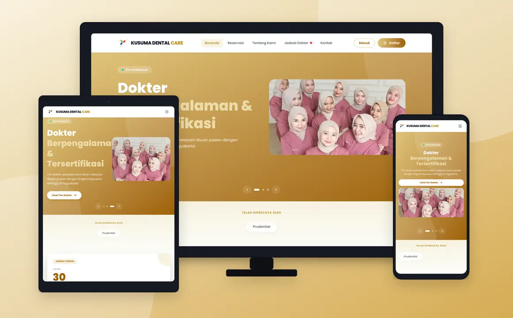
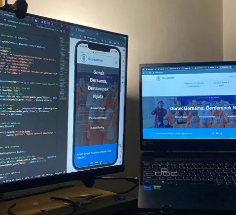
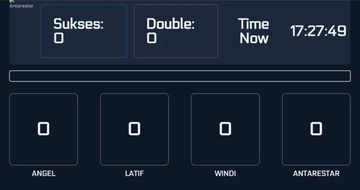
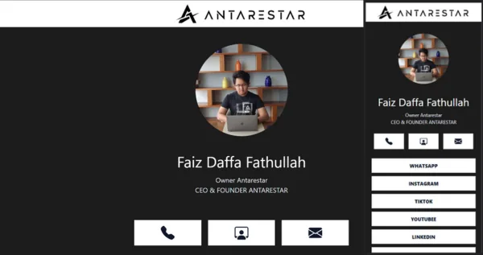
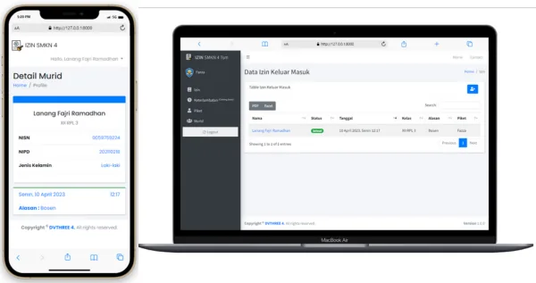

Tentang Saya
Mahasiswa Informatika Universitas Ahmad Dahlan yang berminat pada pengembangan perangkat lunak. Berpengalaman dengan Python, PHP, dan JavaScript, serta merancang dan mengoptimalkan database menggunakan SQL dan API. Percaya bahwa kolaborasi tim dan semangat belajar adalah kunci keberhasilan.
Yang Saya Kerjakan
Pengembangan Web
Membangun situs web, aplikasi web, dan PWA dengan Laravel, Django, dan WordPress, lengkap dengan database hingga dipasang di server.
Analisis Data
Mengolah data dengan Excel, Python, dan SQL menjadi informasi yang rapi dan mudah dipahami, seperti rekap nilai praktikum.
Mengajar
Asisten Praktikum di Universitas Ahmad Dahlan sejak 2024, membimbing mahasiswa memahami materi praktikum setiap semester.
Acara & Organisasi
Aktif berorganisasi serta merencanakan dan mengelola acara, mulai dari koordinasi tim hingga pelaksanaan di lapangan.
Keahlian
Keterampilan Teknis
JavaScript Python PHP SQL Laravel Django WordPress API Excel Desain UI/UXKeterampilan Non-Teknis
Kepemimpinan Kerja Sama Tim Pemecahan Masalah Berbicara di Depan Umum Berpikir Analitis KomunikasiRiwayat
Ringkasan perjalanan akademik, pengalaman kerja, organisasi, dan prestasi.
Pendidikan
S1 Informatika - FTI
Universitas Ahmad Dahlan, Yogyakarta
Rekayasa Perangkat Lunak
SMK Negeri 4 Tasikmalaya
Pengalaman
Staff Bantu Bidang Program
Lazismu DIY
- Membantu administrasi program Bidang Program Lazismu DIY.
- Membantu proses pendistribusian bantuan kepada penerima manfaat.
- Menyiapkan kebutuhan dan perlengkapan program untuk pelaksanaan di lapangan.
Asisten Praktikum
Universitas Ahmad Dahlan
- Menjelaskan materi praktikum kepada mahasiswa.
- Mengolah data nilai praktikum menggunakan Excel.
Web Developer
Antarestar Creative Indo
- Membuat toko online menggunakan WordPress CMS.
- Membangun aplikasi web gudang menggunakan Python/Django.
- Mengimplementasikan sistem untuk karyawan menggunakan PHP/Laravel.
- Mengiklankan produk di Shopee dan Lazada, serta siaran langsung produk di TikTok.
Programmer Lepas
Mandiri
- Menyesuaikan bahasa pemrograman, perangkat, dan database dengan kebutuhan klien.
- Membuat PWA, aplikasi web, dan situs web.
- Memasang proyek ke server.
Organisasi
Staff Kementerian Pendidikan
Badan Eksekutif Mahasiswa Universitas Ahmad Dahlan
Staff Bidang RPK
IMM FTI Universitas Ahmad Dahlan
Koordinator Media
Tim PPK Ormawa IMM FKM UAD
Staff Departemen IPTEK
Himpunan Mahasiswa Informatika Universitas Ahmad Dahlan.
Ketua IT Club
IT Club SMK Negeri 4 Tasikmalaya.
Prestasi
Juara 1 Lomba UI/UX
Informatics Weeks - HMIF Universitas Ahmad Dahlan
Finalis Lomba Pemrograman Web
infinitera 2.0 - HMTIF Universitas Sultan Agung
Lolos Pendanaan PPK Ormawa
Program Penguatan Kapasitas Organisasi Kemahasiswaan
IMM FKM UAD - Kemdiktisaintek
Karya
Eksplorasi proyek pengembangan aplikasi. Klik kartu untuk melihat detail.

Kusuma Dental Care
Website Klinik

Griskanutri
Website Profil Program

Sistem Sortir Double Antarestar
Sistem Sortir Gudang

Company Profile Antarestar
Kartu Nama Digital

Sistem Izin SMKN 4 TSM
Sistem Perizinan Sekolah